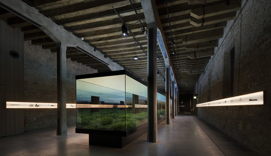
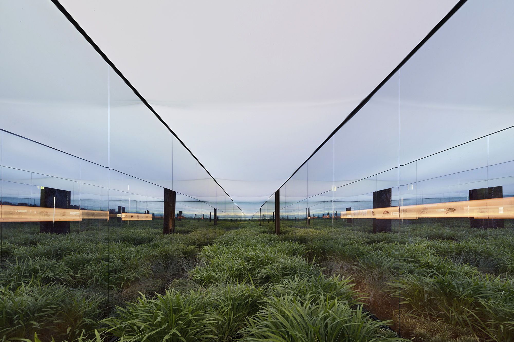
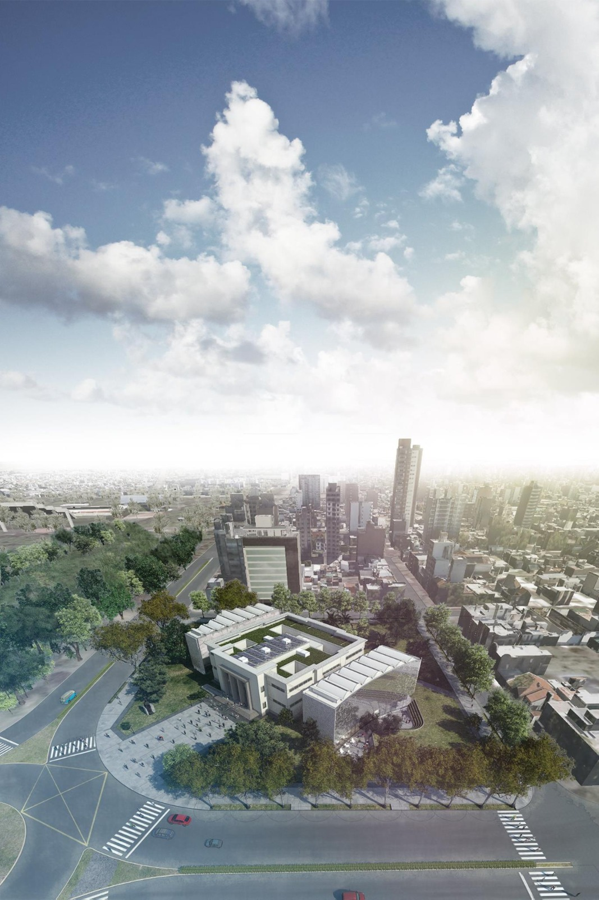
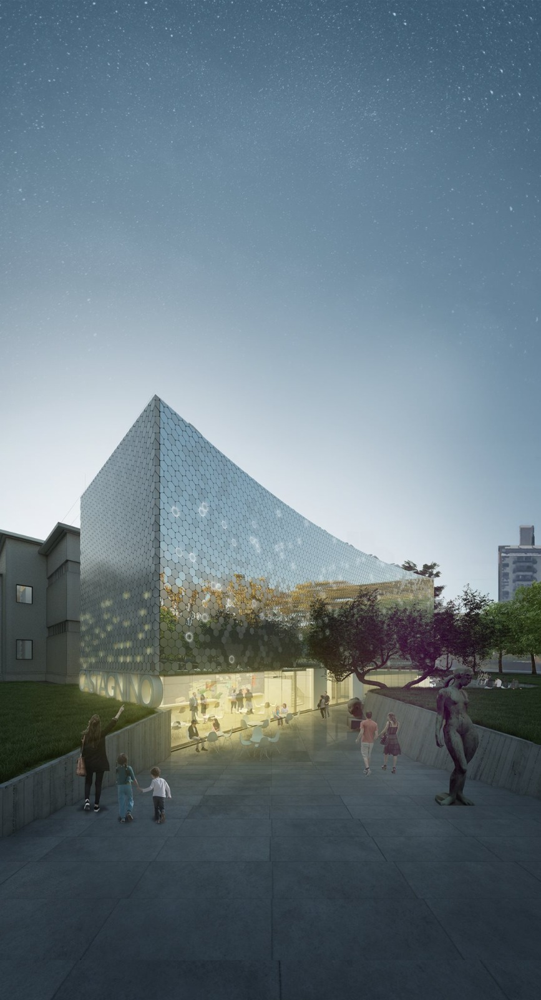
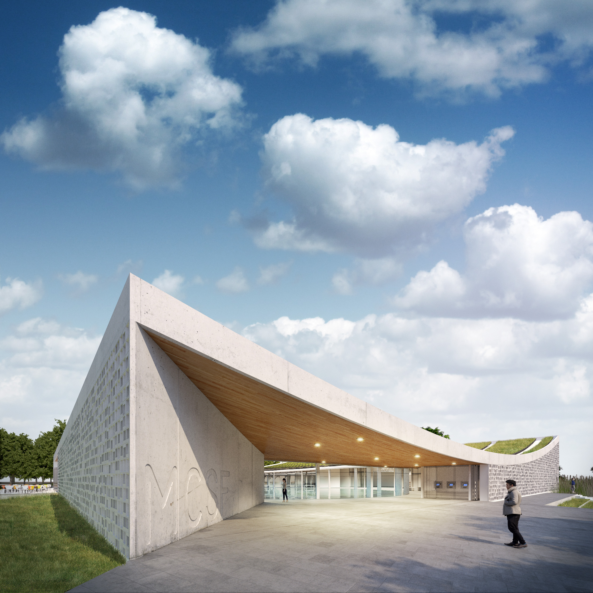
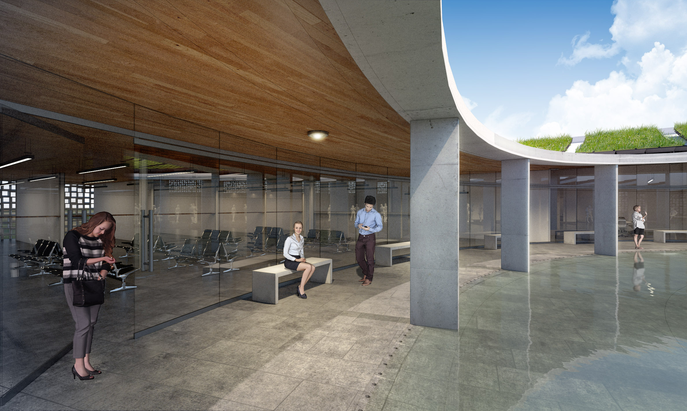

ALEJANDRO MARTÍN TRUCCO

"Soy una persona responsable, comprometida, carismatica, con facilidad para las relaciones interpersonales. Considero al trabajo en equipo como camino ideal para la ejecución de cualquier proceso, y al diseño como herramienta fundamental para poder contemplar y analizar multiples aristas ante el abordaje de cualquier situacion."
/INFORMACIÓN
- Fecha de Nacimiento: 23/11/1990
- Santa Fe / Argentina
- +54912345678910
- alejandrom.trucco@gmail.com
- Estudio FRC.ARQ
- Ig @aletrucco
- Fb /alemtrucco
/EDUCACION
- Universidad Nacional del Litoral
- Arquitectura
- Estudiante avanzado (79.37 %)
- Colegio La Salle Jobson
- Modalidad Biológico
- Egresado 2008
/CONTÁCTO
La información será enviada al correo de "Fractal Estudio"
/EXPERIENCIA LABORAL
/Estudio de arquitectura "Fractal Estudio" Abr. 2017 - Presente
Fundador / Socio Propietario
Diseño / Proyecto / Dirección / Administración / Ejecución
Obras Realizadas:
- Casa RP, Dos lagunas, Santa Fe, 2018.
Proyecto / Dirección / Ejecución.
- Casa Urquiza, Santa Fe, 2018.
Proyecto / Dirección / Ejecución.
- Casa Cabral, Santa Fe, 2018.
Proyecto.
- Casa Bello, Santa Fe, 2018.
Proyecto / Dirección.
- Casa Sanchez(Ampliación), Santa Fe, 2019.
Proyecto.
- Casa Aguilar, Santa Fe, 2019.
Proyecto / Dirección / Ejecución.
- Casa AG, Angel Gallardo, 2020.
Proyecto / Dirección / Ejecución.
- Casa DB(Ampliación), Santo Tomé, 2021.
Proyecto / Dirección / Ejecución.
/Estudio de arquitectura Francisco Garrido & Asoc. 2017 (Ref. 0342 - 5501882)
Diseño / Proyecto / Dirección / Administración / Ejecución
/Estudio de arquitectura Javier Mendiondo & Asoc. 2015 - 2016 (Ref. 0342 - 5350722)
Maquetación / Renderizado / Dibujo de Planos / Proyecto / Seguimiento de Obra
/Taller de Proyecto Arquitectonico III y IV. Cátedra Arroyo. 2013 - 2015 (Fadu - UNL)
Pasantía en docencia como ayudante alumno.
/FORMACIÓN COMPLEM.
2017 - CONCURSO CURADOR PARA EL PABELLON ARGENTINO EN LA BIENAL DE ARQUITECTURA DE VENECIA 2018.
Primer Premio /
 Arqs: Francisco Garrido, Pablo Anzilutti, Javier Mendiondo, Federico Cairoli y asesores: Rodrigo Bordiga, Juan Juarez, Federico Viudez, Alejandro Trucco.
2017 - CONCURSO NACIONAL PARA LA AMPLIACION Y REMODELACION DEL MUSEO CASTAGNINO.
Mencion Honorífica /
 Arqs: Francisco Garrido, Pablo Anzilutti, Javier Mendiondo, Federico Cairoli y asesores: Rodrigo Bordiga, Juan Juarez, Federico Viudez, Alejandro Trucco.
2016 - CONCURSO NACIONAL DE IDEAS CENTRO CÍVICO DEL NORTE DE LA CIUDAD DE SANTA FE.
Primer Premio /
 Arqs: Francisco Garrido, Pablo Anzilutti, Javier Mendiondo, Federico Cairoli y asesores: Rodrigo Bordiga, Juan Juarez, Federico Viudez, Alejandro Trucco.
2015 - WORKSHOP "PALA Y A LA BOLSA, VANGUARDIAS PARAGUAY", SEMINARIO "COLECTIVOS PARAGUAY. VANGUARDIAS AL BORDE".
CAPSF y Vuelta del Paraguayo, Santa Fe.
2015 - CONFERENCIA SEMINAROI "COLECTIVOS PARAGUAY - VANGUARDIAS AL BORDE".
CAPSF y Vuelta del Paraguayo, Santa Fe.
2015 - TALLER VIRTUAL EN RED ARQUISUR, SEGUNDA EDICIÓN. "CIUDADES VULNERABLES, PROYECTO O INCERTIDUMBRE
Expositor
FADU - UNL, Santa Fe.
2015 - XIX CONGRESO ARQUISUR. "CIUDADES VULNERABLES, PROYECTO O INCERTIDUMBRE
Expositor
FAU - UNLP, La Plata
2015 - MIEMBRO DEL CONSEJO DIRECTIVO DE LA FACULTAD DE ARQUITECTURA, DISEÑO Y URBANISMO
Consejero Estudiantil
FADU - UNL, Santa Fe.
/IDIOMAS
ESPAÑOL
NativoINGLÉS
Titulo:"Auxiliar Bilingüe" Ingles / Español
Nivel Avanzado
Insituto Otorgante: Escuela de Educacion Media N° 3015 San Roque.
/INFORMATICA
Word, Excel.
Nivel Avanzado
Autocad, Sketchup, Lumion, Photoshop.
Nivel Avanzado
Archicad, Revit, Unreal Engine
Nivel Básico